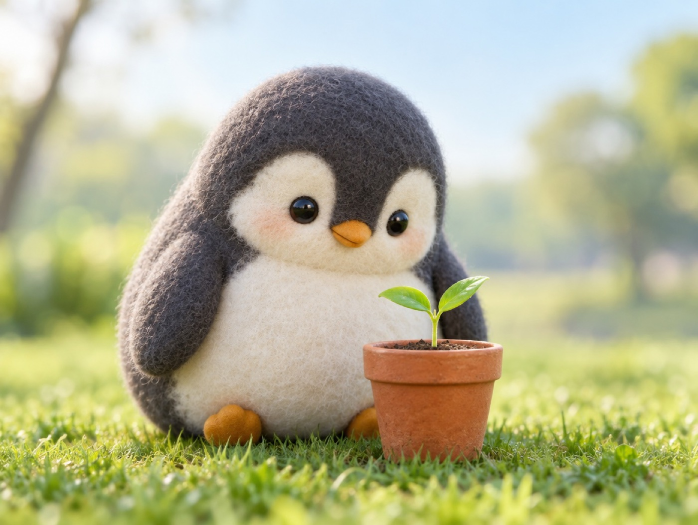

🧪 LAB · 試作 — AIが読書メモから一気に作った記事です。本番の一覧には出していません · 試作の一覧
🐧 EVERYDAY LIFE⚡ 17 SEC
About 2 hours of nature a week helps you stop thinking too much 🌳

Into Nature
It is said that being in nature also helps you stop thinking too much.
For example, taking a walk or touching soil.
2 Hours Total
The goal is about 2 hours a week in total.
That is less than 20 minutes a day.
⚡ TRY IT
Plan a green week
Add small nature times with +. Can you reach 2 hours this week?
0 min / 120
Walk in the park20 min
0
Water the plants10 min
0
Sit by the river30 min
0
Eat lunch outside15 min
0
Your head is full of 🌀. Add some green!
Nice start! The 🌀 is getting smaller.
Almost there! Just a little more.
🎉 2 hours! Your head feels clear.
🌳 Wow, a green week! No need to push too hard, though.
Small Walks
Even a short walk in a park near you seems good.
📚 I learned this from the Japanese blog "Panda no Ondo".